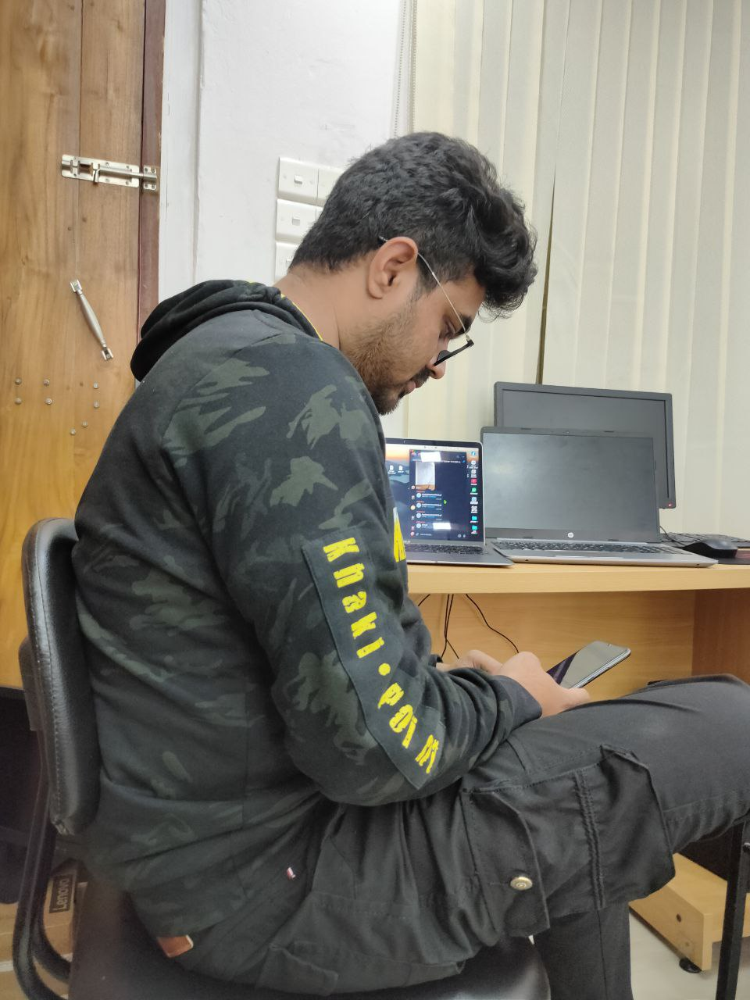

Mehedi Hasan Mamun
2000 - Don't Know
Student
Mehedi Hasan Mamun is a student of Computer Science and Engineering (CSE) at Patuakhali Science and Technology University (PSTU) , enrolled in the 2019 batch. He completed his HSC in Science in 2020 from Cantonment Public School and College, Bir Uttam Shaheed. Hasan is a volunteer in the 'Raktodaner Opekkhay Bangladesh' group, where he helps with blood donation initiatives. He is dedicated to his studies and wants to make his mother, Mahamuda Begum, proud. He is also working on creative projects like a smart rain shedding system, showing his interest in practical problem-solving. Hasan is focused on improving himself and achieving his goals.
Biographies
- Name: Mehedi Hasan Mamun
- Current Education: BSc in Computer Science and Engineering (CSE) at Patuakhali Science and Technology University (PSTU), 2019 batch
- Previous Education: HSC in Science (2020) from Cantonment Public School and College, Bir Uttam Shaheed
- Academic Interests: Passionate about technology, problem-solving, and innovation
- Projects: Working on a smart rain shedding system and other Arduino-based projects
- Volunteering: Active member of 'Raktodaner Opekkhay Bangladesh' (blood donation initiative)
- Family: Aims to make his mother, Mahamuda Begum, proud through his accomplishments
- Future Goals: Focused on academic excellence and contributing positively to his community